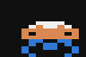
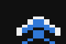
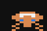
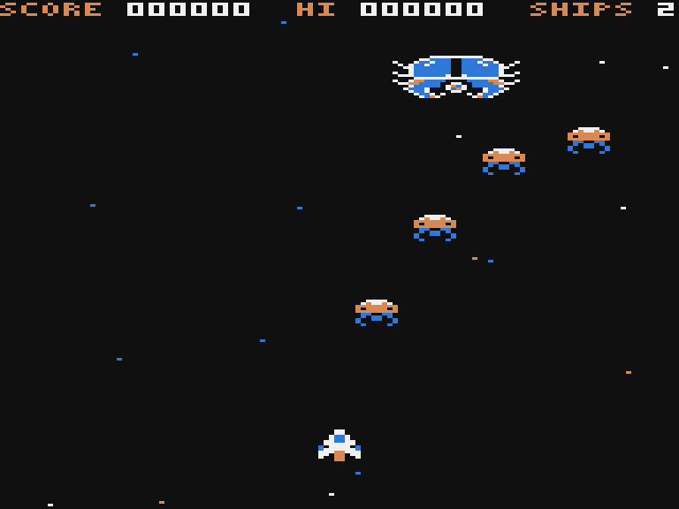
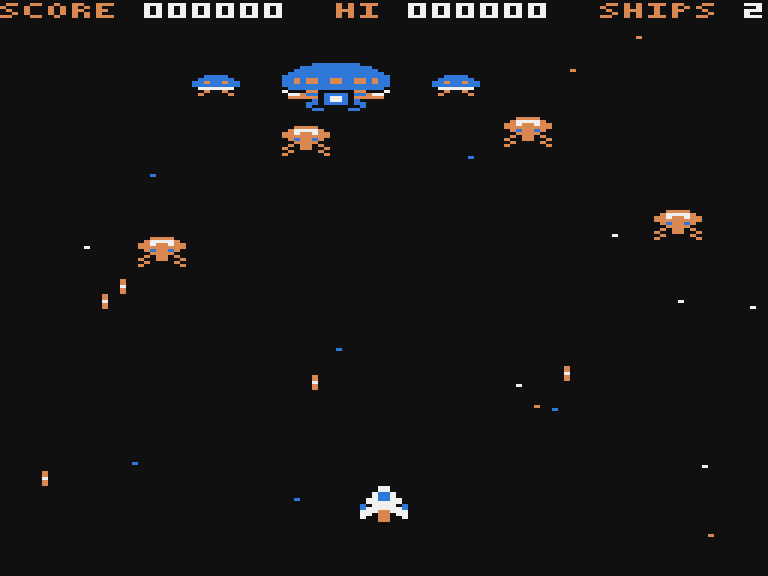
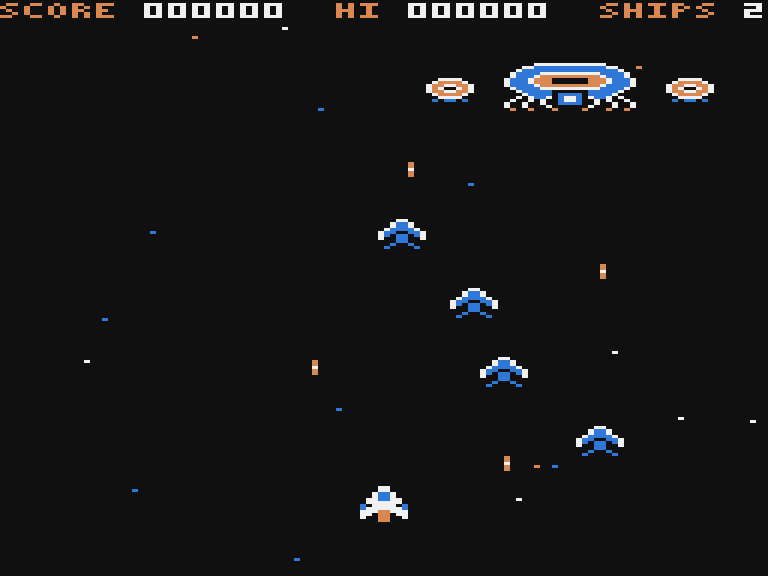
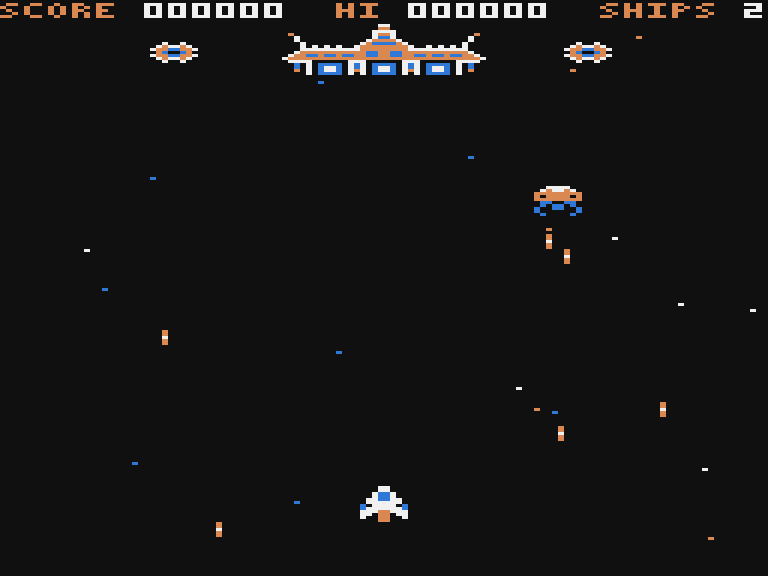

The story
The alien Blorps are on the march. Fly up through four areas of space and break wave after wave of their fighters. Each area ends with a boss, and the last of them is the Space Fortress. Bring it down and the galaxy is safe… until the Blorps come back, faster and fiercer, in the next round.
Controls
A PI-KEY10 joystick plugged in as joystick 1 works too.
Meet the Blorps

SWOOPER
ZAGGER
WARPEREach alien you shoot scores 10 × the round. Swoopers, Zaggers and Warpers dive, weave and wrap around the screen, dropping bombs as they go.
Scoring and bonuses
- Sortie bonus: wipe out a whole wave before any of it escapes, with no more than 3 seconds between kills and no other kind of alien shot down in between. That earns 10× an alien's value and a ba-BING!
- Extra ships at 10,000 and 25,000 points, then every 25,000 after that.
- SHIPS on the status bar counts the ships you have in reserve.
- Beat the fortress for 10,000 per ship left in reserve.
- Your best score is saved on the SD card (
STARFALL.HI).
Rounds
After the fortress falls, the next round begins. Bombs fly faster and the aliens fire more often. On even rounds the Blorps change colour too.
The bosses
Each boss shows its weak spot: hit the core. From area 2 on, envoys guard the boss, and its core stays shut until they are destroyed. The fortress has three cores, and they open one after another.




What you need
- A TRS-80 MC-10 with the 8K internal RAM mod
- An MCX32-SD card interface
- A TV or monitor that shows NTSC artifact colour. Press C on the colour check screen if the colours are swapped.
- Or the VMC10 for Linux emulator, run with
--8k --mcx32sd
STARFALL.BIN and SFBOSS1.BIN–SFBOSS4.BIN
to the SD card, then typeLOADM"STARFALL" and EXEC.